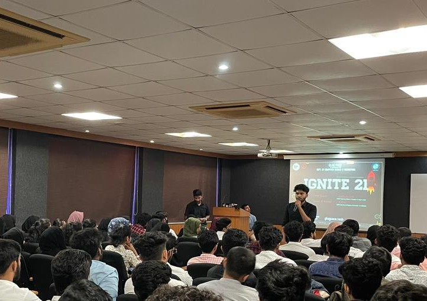
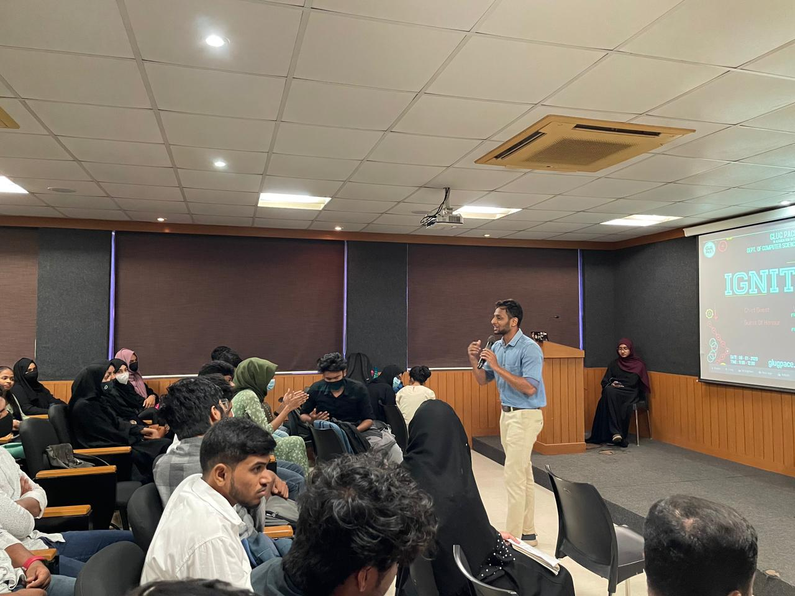
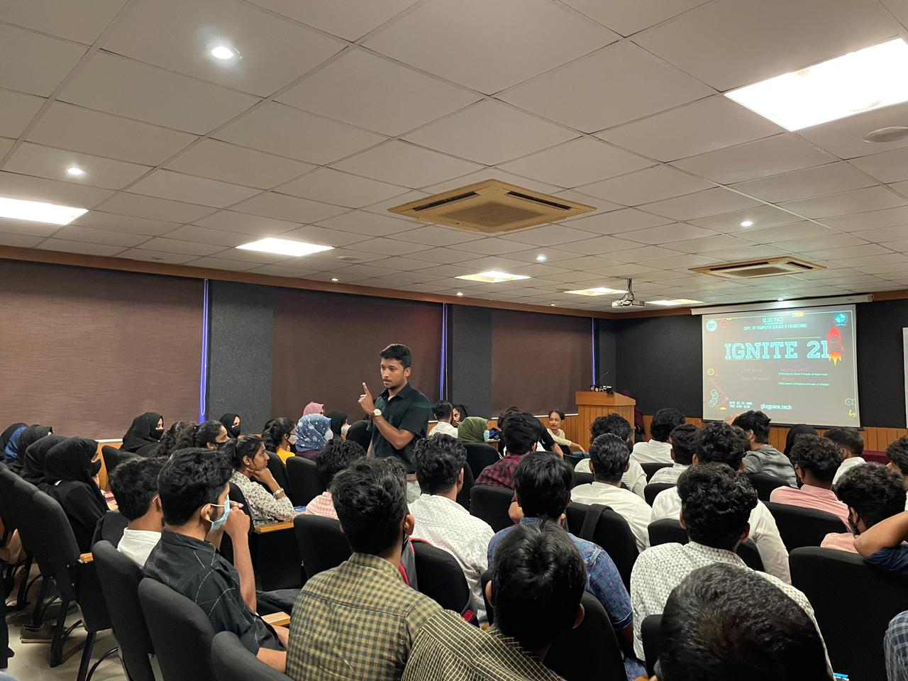
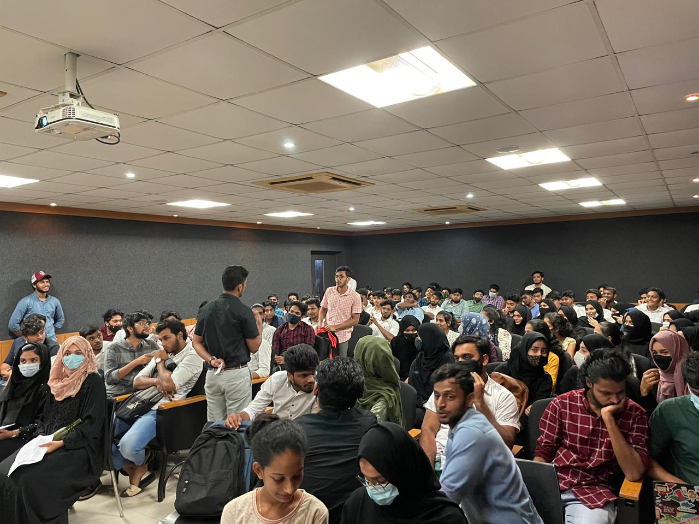

IGNITE 21
Date: 08-01-2021
Venue: Multi Purpose Hall
GLUG Pace, Department of Computer Science and Engineering organised an event called Ignite '21 on 8th January 2021 at 9am-12pm, in the MP Hall.
The event was to introduce the 2nd year's to GLUG Pace, and Free & Open Source Software (FOSS). The MC of the event was Waseema.The first talk was delivered by Technical head of Glug Pace, Ansad, about what is Glug and Introduction to Foss.
It was followed by a talk by Vice President of Glug, Arkaan, about the Societal Applications of Foss, along with motivating the 2nd years about how to start learning coding. The next talk was given by President of Glug, Shayiz. He spoke about Privacy with regards to Social Media, and about the importance of gaining knowledge. The Chief Guest of t occasion was Ramseshan S., Senior DevOps Engineer and CTO at Chiguru CoLab, who provided the inaugural talk on Foss and its importance. The next talk was given by the Guest of Honour, Rizma. She is an AI Engineer and Co-founder of Atom360.
 Students from 2nd and 3rd years also shared their experiences on being in Glug. The vote of thanks was given by Harshika. The event was concluded with games conducted by Vishnu and Marzooq.
Overall, the event was very interactive, with students asking queries to the speakers. Feedback received was positive and students showed interest in attending further events by Glug.